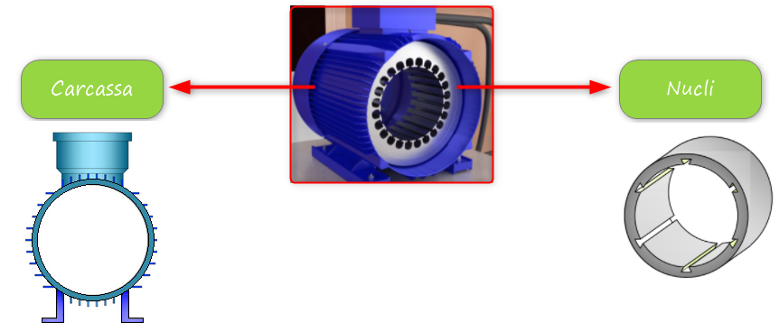
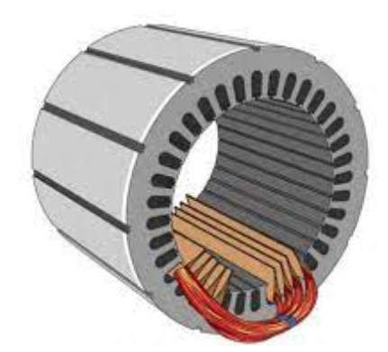
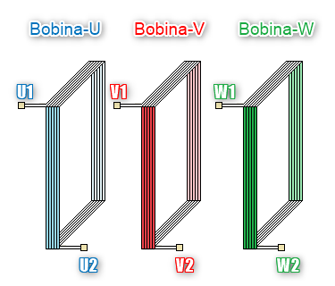
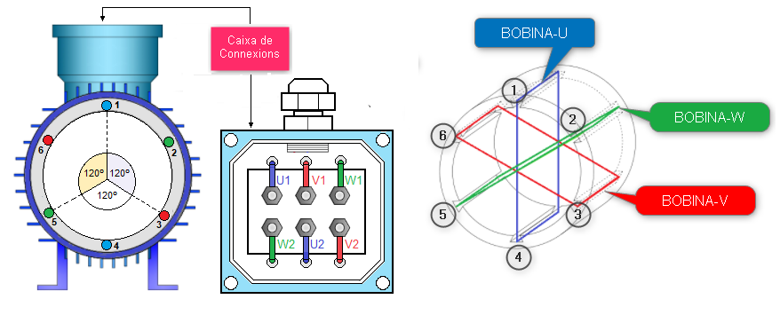
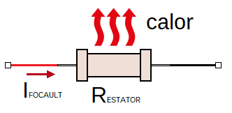
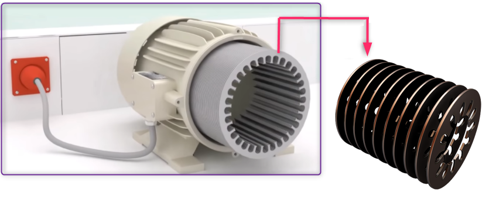

Estator
L'estator d'un motor d'inducció està format per:

Carcassa
S'anomena carcassa a la part més externa de l'estator i està construïda en ferro fos o acer laminat. La seua funció és.
La funció de la carcassa es protegir al motor contra els impactes i també impedir l'entrada d'aigua i d'objectes sòlids.
Nucli

La funció del nucli és allotjar en les seues ranures les tres bobines encarregades de generar el camp magnètic giratori.
Aquestes tres bobines estan formades per fil de coure aïllat amb vernís i reben el noms de: U (U1-U2), V (V1-V2) i W (W1-W2).

La primera condició que s'ha de complir per generar un camp magnètic rotatiu és que aquestes tres bobines s'han de distribuir per les ranures del rotor amb un desfase de 120º. Com podeu veure en la següent imatge, a la bobina U li corresponen les ranures 1-4 del nucli, a la bobina V li corresponen les ranures 3-4 i a la bobina W li corresponen les ranures 2-5.

La segona condició que s'ha de complir per generar un camp magnètic rotatiu es connectar aquestes tres bobines a un sistema trifàsic de tensions. Aquesta connexió (en estrela o triangle) es fa en la caixa de connexions del motor, que és el lloc on són accesibles els terminals de les bobines U, V i W.
Una forma de comprovar l'existència d'aquest camp giratori és introduir una bola de ferro dins l'estator d'un motor d'inducció i subministrar energia a les seues bobines. Si la bola comença a girar deduirem que és per l'efecte del camp magnètic rotatiu generat per l'estator del motor.
Circuit elèctric del nucli
Recordem que Oersted va descobrir que la circulació de corrent per un conductor donava lloc als camps magnètics. Posteriorment, es va descobrir que quan un conductor es trobava dintre d'un camp magnètic variable, com el creat per les bobines de l'estator, s'induïa una tensió elèctrica (llei de Faraday). En el cas de que el conductor formés un circuit tancat el que es genera es una circulació de corrent que rep el nom de corrent induït.
El nucli de l'estator està fet de ferro, per tant, és un material conductor que es troba afectat per un camp magnètic variable (creat per les tres bobines U, V i W) i pel qual circularà un corrent elèctric. Des d'un punt de vista elèctric l'estator es comportarà com una resistència elèctrica per la qual circula un corrent elèctric anomenat "corrents de focault".

Aquest corrent provocarà un escalfament del nucli que pot ser molt perillós. Per tal d'evitar que el corrents que circulen pel nucli de l'estator siguen molt elevats, aquest no es construeix macis, sinó mitjançant l'apilament de làmines molt fines (al voltant de 0'3-0'2mm) a les quals se'ls aplica un tractament químic (carlite) que les recobreix d'un aïllament molt fi (0'01mm).

Imatgens de nuclis de motors de inducció


Licencia: licencia de software libre GPL